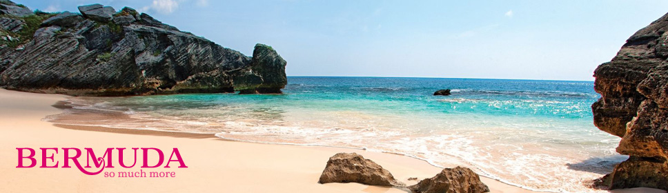

BERMUDA ISLANDS
SERVICES OFFERED BY DESTINATIONS
Representative of Bermuda Tourism in Italy, responsible for their media & public relations, groups & incentive, advertising and online marketing.
Thousands of miles north of the Bahamas and the Caribbean, in a rare beautiful strip of the Atlantic ocean and a few hours flight from New York, is the island of Bermuda.
Consisting of about 180 islands linked by bridges, which turn them into one big oasis, and subdivided into nine distinctive districts (Parishes), Bermuda is characterized by spectacular pink beaches, luxurious vegetation and unique wildlife.
Islands dipped in a turquoise sea, golden beaches fringed by coral reefs and
protected even where the winter is a hot spring and the Bermudian, with the typical Bermudian shorts worn under jackets, perpetually seem to smile at life
.
The Bermuda Islands are accessible by air with daily flights British Airways via London, with departures from
Milan, Bologna, Pisa, Venice, Rome, Catania, Verona, Turin, Naples, Brindisi and Cagliari.
Alternatively, from New York and other cities in the eastern United States which is a few hours' flight.